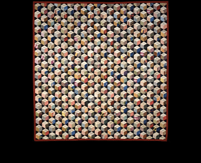

Autograph quilt, ca. 1856–63 Adeline Harris Sears Silk with inked signatures; In 1856, seventeen-year-old Adeline Harris, the daughter of a well-to-do Rhode Island mill owner, conceived of a unique quiltmaking project. She sent small diamond-shaped pieces of white silk worldwide to people she esteemed as the most important figures of her day, asking each to sign the silk and return it to her. By the time the signatures were all returned and ready to be stitched into a "tumbling-blocks" patterned quilt, Adeline had amassed an astonishing collection of autographs. Her quilt features the signatures of eight American presidents; luminaries from the worlds of science, religion, and education; heroes of the Civil War; such authors as Charles Dickens and Ralph Waldo Emerson; and an array of prominent artists. Today, the autographs displayed in this beautiful and immaculately constructed quilt provide an intriguing glimpse into the way an educated young woman of the mid-nineteenth century viewed her world.
